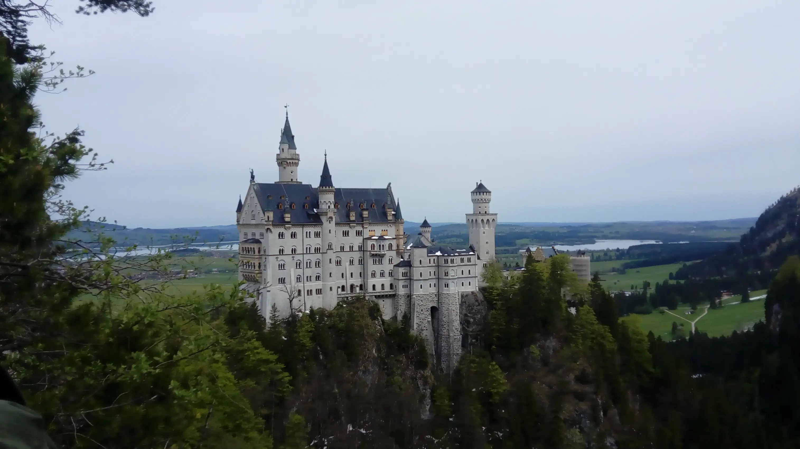
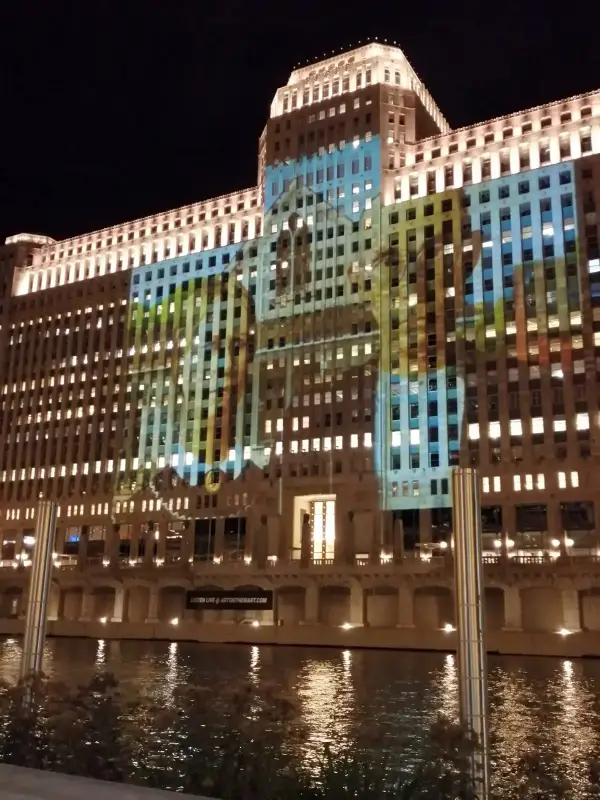

Uno de los lugares a los que más veces he ido
de vacaciones es Vigo de Sanabria, ya que mi tío
tiene una casa cerca del lago.
Sus paisajes naturales y rutas de montaña son un entorno ideal para quienes disfrutan de la naturaleza y
la botánica.

Foto del Castillo de Neuschwanstein
VIAJE 02
Alemania
Acerca del viaje
Durante el instituto participé en un intercambio
de alemán. Gracias a esto, tuve la oportunidad de
visitar un pueblo cercano a Munich.
Entre muchos de los lugares que visitamos,
se encuentra el castillo de Neuschwanstein,
en el que está basado el castillo de Disney.

Foto de Chicago
VIAJE 03
Estados Unidos
Acerca del viaje
En el instituto también tuve la posibilidad de
participar en el intercambio de inglés, en este
caso con un instituto de Chicago.
Aunque no pude asistir a todas las actividades
porque estuve enferma unos días, pude disfrutar
bastante la experiencia.